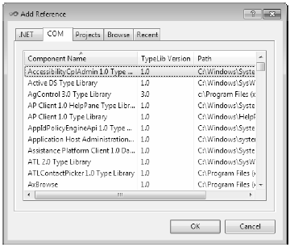
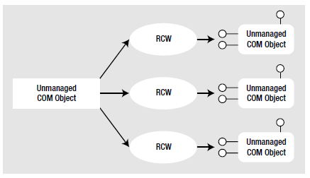
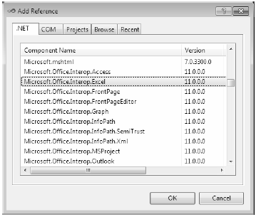
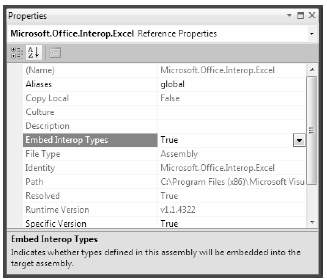

Let’s see another useful case for the dynamic keyword within the context of a COM interoperability project. Now, if you don’t have much background in COM development, do be aware for this next example that a compiled COM library contains metadata, just like a .NET library; however, the format is completely different. Because of this, if a .NET program needs to use a COM object, the first order of business is to generate what is known as an “interop assembly” (described in the following) using Visual Studio 2010. Doing so is quite straightforward. Just activate the Add Reference dialog box, select the COM tab and find the COM library you wish to make use of (see Figure 18-5).
Figure 18-5 The COM tab of the Add Reference dialog box will show you all registered COM libraries on your machine
Once you select a COM library, the IDE will respond by generating a brand new assembly which contains .NET descriptions of COM metadata. Formally speaking, these are termed “interoperability assemblies“ (or simply, interop assemblies). Interop assemblies do not contain any implementation code, except for a small amount that helps translate COM events to .NET events. However, these interop assemblies are very useful in that they shield your .NET codebase from the complex underbelly of COM internals.
In your C# code, you can directly program against the interop assembly, allowing the CLR (and if you use the dynamic keyword, the DLR) to automatically map .NET data types into COM types, and vice versa. Behind the scenes, data is marshaled between the .NET and COM applications using a Runtime Callable Wrapper (RCW), which is basically a dynamically generated proxy. This RCW proxy will marshal and transform .NET data types into COM types, adjust the COM object’s reference counter, and map any COM return values into .NET equivalents. Figure 18-6 shows the big picture of .NET to COM interoperability.
Figure 18-6 .NET programs communicate with COM objects using a proxy termed the RCW
Many COM libraries created by COM library vendors (such as the Microsoft COM libraries that allow access to the object model of Microsoft Office products) provide an “official” interoperability assembly termed a primary interop assembly or PIA. PIAs are optimized interop assemblies, which clean up (and possibly extend) the code typically generated when referencing a COM library using the Add Reference dialog box.
PIAs are typically listed in the .NET tab of the Add Reference dialog box, just like the core .NET libraries. In fact, if you reference a COM library from the COM tab of the Add Reference dialog box, Visual Studio will not generate a new interoperability library as it would normally do, but use the provided PIA instead. Figure 18-7 shows the PIA of the Microsoft Office Excel object model, which you will be using in the next example.
Figure 18-7 PIAs are listed in the .NET tab of the Add Reference dialog box
Before the release of .NET 4.0, when a C# application made use of a COM library (PIA or not), you needed to ensure the client machine has a copy of the interop assembly on their computer. Not only will this increase the size of your application installer package, but the install script must check that the PIA assemblies are indeed present, and if not, install a copy to the GAC.
However, under .NET 4.0, you can now elect to embed the interoperability data directly within your compiled .NET application. When you do so, you are no longer required to ship a copy of the interoperability assembly along with your .NET application, as the necessary interoperability metadata is hardcoded in the .NET program.
By default, when you select a COM library (PIA or not) using the Add References dialog, the IDE will automatically set the Embed Interop Types property of the library to True. You can see this setting first hand by selecting a referenced interop library in the References folder of the Solution Explorer, and then investigate the Properties window (see Figure 18-8).
Figure 18-8 .NET 4.0 allows you to embed the parts of an interop assemblies you make use of into your .NET assembly
The C# compiler will only include the parts of the interop library you are actually making use of. Thus, if the real interop library has .NET descriptions of hundreds of COM objects, you will only bring in the definitions of the subset you are really making use of in your C# code. Beyond reducing the size of the application you need to ship to the client, you also have an easier installation path, as you don’t need to install any missing PIAs on the target machine.
When you are authoring C# code that programs against a COM library (via the interop assembly), you were sure to face a number of challenges before the release of .NET 4.0. For example, many COM libraries defined methods which took optional arguments, which were not supported in C# until the current release. This required you to specify the value Type.Missing for every occurrence of the optional argument. For example, if a COM method took five arguments, all of which were optional, you would need to write the following C# code in order to accept the default values:
myComObj.SomeMethod(Type.Missing, Type.Missing, Type.Missing, Type.Missing, Type.Missing);
Thankfully, under .NET 4.0, you are now able to author the following simplified code, given that the Type.Missing values will be inserted at compile time if you don’t specify a true blue value.
myComObj.SomeMethod();
On a related note, many COM methods provided support for named arguments, which as you recall from Chapter 4, allows you to pass values to members in any order you require. Given that C# supports this same feature as of .NET 4.0, it is very simply to “skip’ over a set of optional arguments you don’t care about, and only set the few you do.
Another common COM interop pain point has to do with the fact that many COM methods were designed to take and return a very particular data type termed the Variant. Much like the C# dynamic keyword, a Variant data type could be assigned to any type of COM data on the fly (strings, interface references, numerical values, etc). Before you had the dynamic keyword, passing or receiving Variant data points required some hoop jumping, typically by way of numerous casting operations.
As of .NET 4.0 and Visual Studio 2010, when you set the Embed Interop Types property to True, all COM variants are automatically mapped to dynamic data. This will not only reduce the need to extraneous casting operations when working with underlying COM Variant data types, but will also further hide some COM-complexities, such as working with COM indexers.
To showcase how the use of C# optional arguments, named arguments and the dynamic keyword all work together to simplify COM interop, you will now build an application which makes use of the Microsoft Office object model. As you work through the example, you will get a chance to make use of the new features, as well as forgo them, and then compare and contrast the workload.
Note Previous editions of this book included a detailed examination of how to make use of legacy COM objects in your .NET projects using the System.Runtime.InteropServices namespace. In the current edition, I have opted to omit that chapter, as the dynamic keyword can be used to communicate with COM objects with far fewer pain points. If you wish to see how to communicate with COM objects in a strongly typed (longhand) notation, consult the .NET Framework 4.0 SDK documentation.